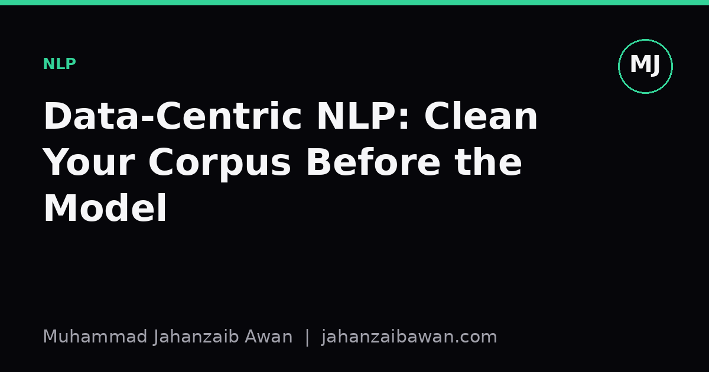

Data-Centric NLP: Clean Your Corpus Before the Model
Before you tune another hyperparameter, look hard at your data. Most of the gains I have seen in practice come from fixing the corpus, not the architecture.

The model is rarely the bottleneck
When a text classifier underperforms, the instinct is to reach for a bigger model, a different learning rate, or another layer of attention. In my experience this is usually the wrong first move. Most of the ceiling on performance is set by the corpus, not the architecture. Duplicated examples, mislabelled rows, boilerplate text, and inconsistent encoding all shape what the model can possibly learn, and no amount of tuning fixes a dataset that is quietly lying to you.
Consider a sentiment classifier trained on twenty thousand product reviews. Suppose three thousand of those reviews are near-duplicates: the same complaint copied across variants of a product listing, or scraped twice under different URLs. If some of those duplicates land in both the training and test split, your test accuracy will look better than it should. You are not measuring generalisation, you are measuring memorisation of text the model has already seen in a slightly different guise. I have watched reported accuracy drop by several points the moment near-duplicates are properly separated across splits, purely because the leakage was inflating the number.
This is the core claim of data-centric NLP: treat the dataset as the primary object of engineering effort, and treat the model as comparatively fixed. It is not a rejection of modelling work, it is a reordering of priorities. Fix the data first, establish an honest baseline, and only then start spending compute on architecture search.
Where corpora actually go wrong
Duplication is the most common issue and the easiest to underestimate. Web-scraped corpora routinely contain the same paragraph appearing under multiple documents, whether from syndicated news articles, template boilerplate on e-commerce sites, or forum threads that get reposted. A hash-based check on normalised text will catch exact duplicates quickly, but near-duplicates need something like shingling or minhash similarity, since a single changed sentence will defeat exact matching. In one hypothetical case, a corpus of fifty thousand support tickets might contain four thousand tickets that are copy-paste templates with only the customer name changed. If those get split naively, the model learns to recognise the template rather than the underlying issue, and your test set rewards it for doing so.
Label noise is the second major source of trouble. In multi-class text classification, annotation guidelines are often ambiguous at the boundaries, and a fraction of labels end up wrong simply through human inconsistency. If five percent of your labels are noisy and randomly distributed, a strong model can often absorb that noise and still generalise reasonably well. But if the noise is systematic, for instance one annotator consistently confusing two adjacent categories, the model will learn that annotator's bias rather than the true distinction, and no amount of regularisation removes a systematic error. Spot-checking a random sample of a few hundred labelled examples by hand, and comparing agreement against the stated guidelines, is unglamorous but it tells you more than another epoch of training.
Encoding and normalisation issues are less dramatic but still costly. Mixed encodings, stray HTML entities, inconsistent Unicode normalisation forms, and leftover markup tags can silently fragment your vocabulary. A word appearing as both a plain token and an HTML-escaped variant is treated as two entirely different tokens by most tokenisers, which quietly halves the effective training signal for that word. This matters more for smaller corpora and rarer words, where every additional occurrence counts.
Finally, there is distributional skew: class imbalance that is not representative of the deployment setting, or topic imbalance where the corpus over-represents one domain and under-represents another the model will actually see in production. This is not something a clever loss function reliably fixes on its own; it is something you diagnose by actually reading a sample of the data and comparing it against what you expect the deployed system to encounter.
A worked intuition: leakage-aware splitting
Suppose you are building a classifier to detect whether a customer support message needs escalation, trained on eighty thousand historical tickets. A naive approach shuffles all tickets randomly and splits seventy percent train, fifteen percent validation, fifteen percent test. This looks correct, but if the same customer submitted multiple similar tickets across the dataset, some of those near-identical tickets from the same customer will end up split across train and test. The model then partly memorises that customer's phrasing rather than learning the general signal of escalation.
A leakage-aware split instead groups by customer, or by ticket thread, and ensures that all tickets from a given group fall entirely within one split. It sounds like a small change, but in practice the reported test accuracy under group-aware splitting is often meaningfully lower than under naive random splitting, precisely because naive splitting was letting the model cheat. The uncomfortable truth is that the lower number under proper splitting is the honest one, and it is the number that should guide decisions about whether the model is ready to deploy.
The same logic extends to time. If your corpus spans two years of tickets and your deployment will always be forecasting the future from the past, a random split lets the model see vocabulary and events from next month while training on this month, which will never happen in production. A temporal split, training on the first eighteen months and testing on the last six, is a more honest simulation of the deployment condition, even though it usually produces a harder and less flattering evaluation.
A practical checklist and why it matters
None of this needs exotic tooling. Before touching a model, it is worth running through a short checklist: deduplicate exactly and approximately, and check whether any duplicates cross the train and test boundary; audit a random sample of labels against the annotation guideline and estimate a rough error rate; normalise encoding and strip markup consistently, and check tokeniser vocabulary for near-identical variants of common words; and compare the class and topic distribution in your corpus against your best understanding of the deployment distribution.
The payoff for this work is not glamorous, but it is real. A cleaned corpus gives you an evaluation number you can trust, which means every subsequent modelling decision is being made against a stable, honest baseline rather than a number partly manufactured by leakage or noise. It also tends to be far cheaper than model iteration: an afternoon spent deduplicating and auditing labels is usually far less expensive than a week of hyperparameter search chasing a phantom gain.
The practical takeaway is simple to state and easy to neglect: before you change a single model setting, look at your data as carefully as you would look at your results. Clean the corpus first, establish a leakage-aware split, and only then start comparing architectures. The model you build afterwards will be simpler to trust, and the numbers you report will actually mean what they claim to mean.